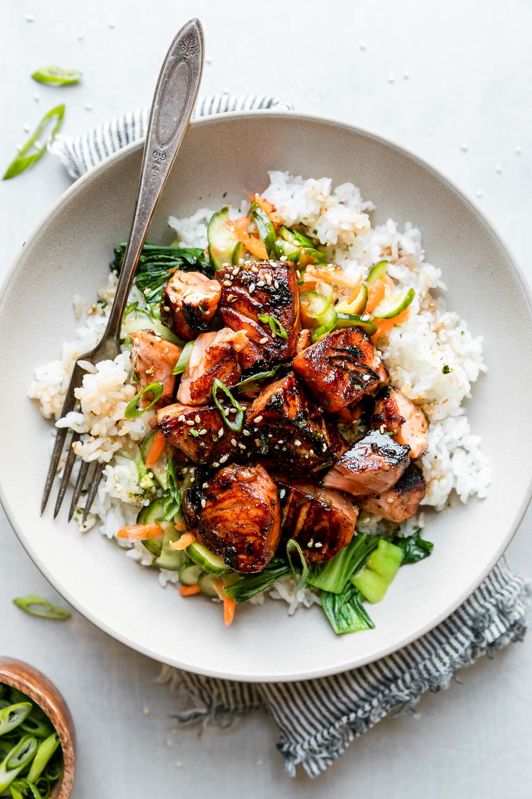

Glazed Salmon

Description
Have you ever made a recipe that truly surprised you?
Normally I’m not a huge salmon lover, but after one bite of
this ultra tender salmon, I was absolutely in love.
I literally did a little dance in the kitchen because
I finally found a way that I can enjoy salmon!
Ingredients
- Salmon filets
- Kosher salt
- Black pepper
- Smoked paprika
- Butter
- Olive oil
- Garlic
- Honey
- Water
- Soy sauce
- Sriracha sauce
- Lemon juice
Steps
- Pat salmon dry, then season with salt, pepper, paprika and blackening seasoning (if using). Set aside.
- IMPORTANT: Adjust oven rack to middle position, then preheat broiler. If you broil this with the rack up high the sauce will burn.
- Add butter and oil to a large, oven-safe skillet over MED-HIGH heat. Once butter is melted, add garlic, water, soy sauce, sriracha, honey and lemon juice and cook 30 seconds or so, until sauce is heated through.
- Add salmon, skin side down (if using salmon with skin), and cook 3 minutes. While salmon cooks, baste frequently with sauce from the pan by spooning it over the top of the salmon.
- Broil salmon for 5-6 minutes, basting with sauce once during the broil, until salmon is caramelized and cooked to desired doneness.
- Garnish with minced parsley if desired.